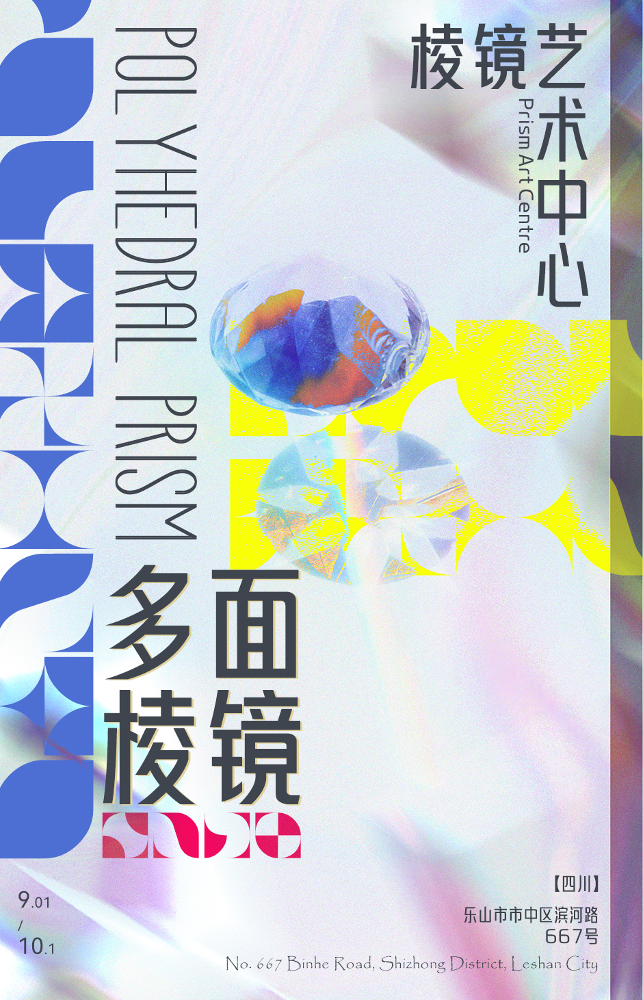
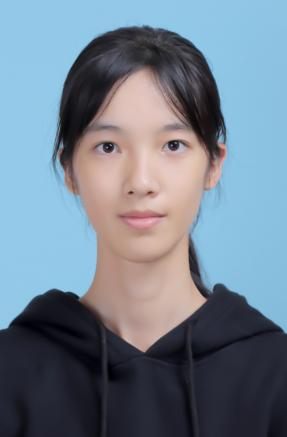
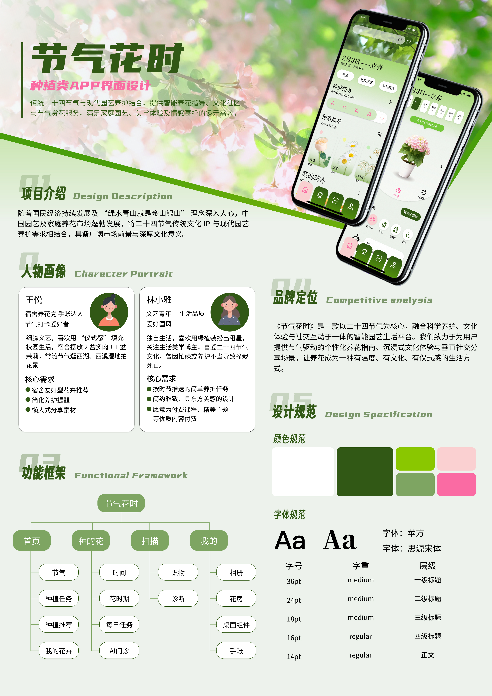
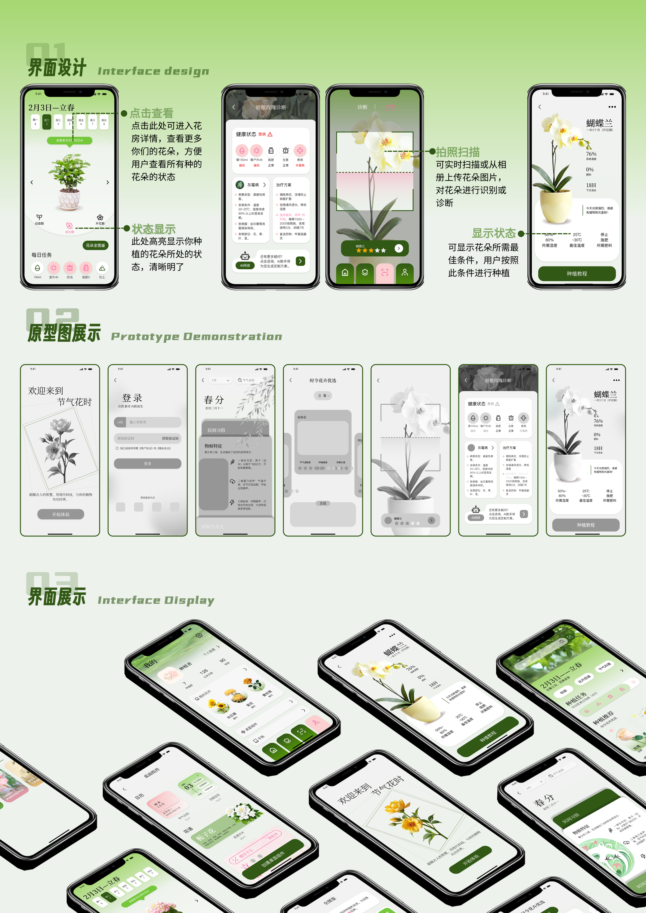
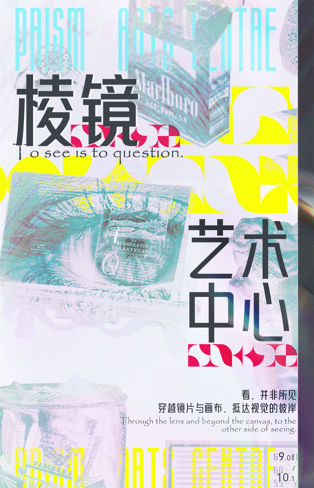
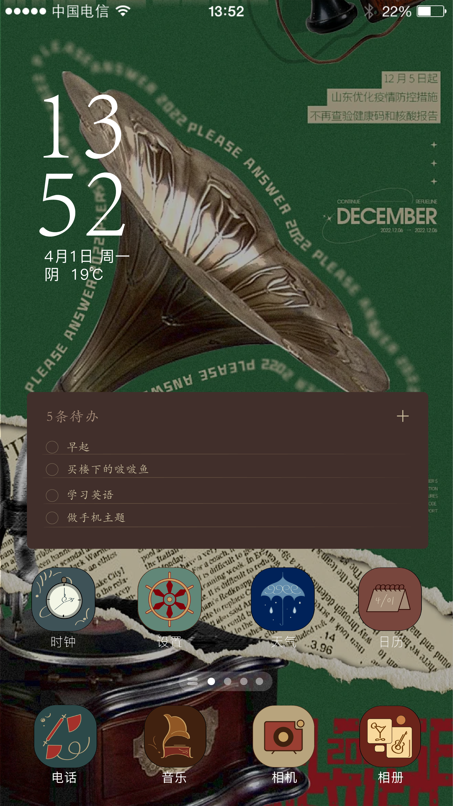
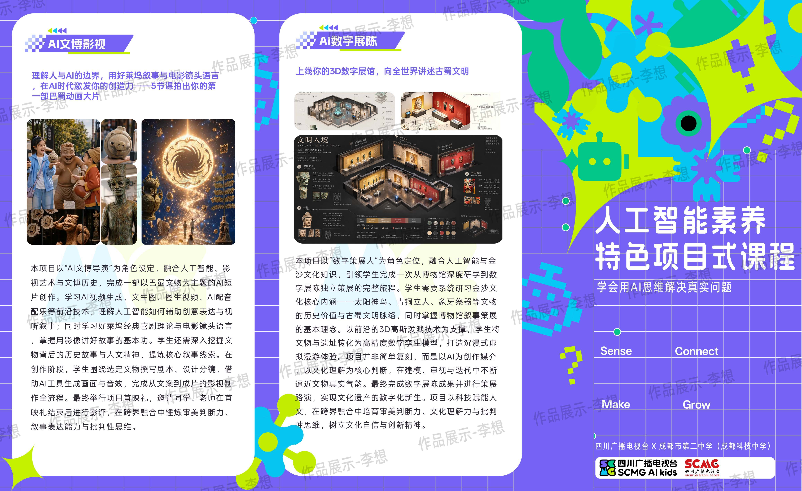

↗01 / 关于我ABOUT

持续创作中
一点关于我
你好，我是李想。
一个用视觉思考的人。
就读于数字媒体技术专业，关注平面设计、数字产品与 AI 创作。擅长将想法整理成有秩序、有情绪的视觉语言，也乐于在新的工具与媒介中持续探索。
教育背景乐山师范学院 · 数字媒体技术2023 — 2027 · GPA 3.32 / 专业前 30%
实践经历平面设计 / 活动执行成都星合 · 2026 至今 ／ 成都熊猫 · 2025
06+作品主题
03年设计学习与实践
多维从平面到数字体验
保持好奇，持续
把想法做出来。
02 / 精选项目SELECTED WORKS · 2024—26
一些认真做过的
视觉练习。
平面、界面与数字内容。
每个项目都是一次新的观察。

↗春分 — 花植生活方式

↗让日常多一点自然

↗棱镜艺术中心

↗夜色中的数字漫游

↗人工智能与未来想象
作品图片来自个人作品集材料 · 点击卡片可查看原图
03 / 我的方式WHAT I BRING
能力与习惯
从一个好问题，
开始好的设计。
视觉表达
色彩、版式与图形语言
将信息梳理成清晰、有记忆点的平面视觉。
数字体验
界面 · 动效 · 影像
理解从界面布局到动态叙事的多种媒介表达。
AI 创作
生成式工具 · 创意探索
把 AI 工具融入灵感探索与视觉制作流程。
协作落地
沟通 · 执行 · 细节
有活动与实习执行经验，关注交付质量与团队协作。
常用工具
Photoshop · Illustrator · Figma · After Effects · Premiere · C4D · AI 工具